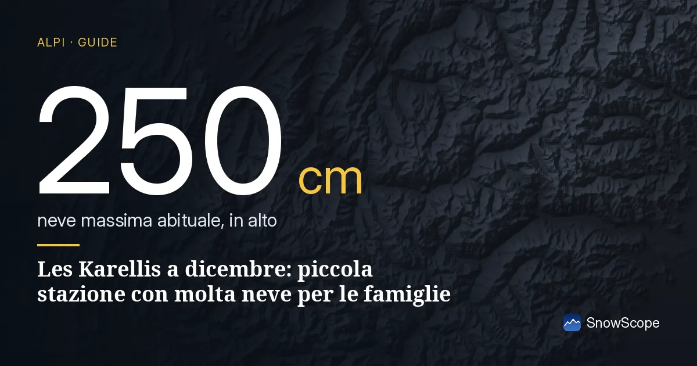

Les Karellis a dicembre: piccola stazione con molta neve per le famiglie
Les Karellis a dicembre è una scelta tranquilla per i genitori che vogliono neve affidabile senza un prezzo alto. Questa stazione nella valle della Maurienne è più piccola delle sue vicine, ma si trova abbastanza in alto da offrire un buon sci a inizio stagione. Se stai pianificando un viaggio in famiglia, la combinazione di una base a 1.550 m e skipass convenienti la rende un'alternativa pratica ai grandi comprensori sciistici.
Le previsioni neve in tempo reale per Les Karellis nell'app SnowScopeAltezza neve, allerte powder e mappa 3D, gratis.
Una piccola stazione con una base alta
Les Karellis è una stazione compatta facile da girare per le famiglie. Il comprensorio sciistico mappato ha 45 km di piste e 14 impianti, che sono sufficienti per una settimana di sci con i bambini. La stazione inizia a 1.550 m e sale fino a 2.484 m, offrendo un dislivello totale di 934 m. Poiché il villaggio è a 1.550 m, hai spesso neve proprio ai piedi degli impianti.
La nostra cronologia della neve degli ultimi 46 inverni mostra che la base è piuttosto affidabile per una stazione di queste dimensioni. Lo spessore abituale a dicembre alla base è di 37 cm. In un inverno molto nevoso, che accade circa 1 inverno su 10, lo spessore può raggiungere 73 cm. Anche in un inverno con poca neve, che accade anche circa 1 inverno su 10, la base ha solitamente almeno 16 cm di neve. Questa altezza è un grande vantaggio quando altre stazioni più basse stanno ancora aspettando una copertura solida.

Neve di dicembre settimana dopo settimana
Lo spessore della neve a Les Karellis migliora significativamente man mano che dicembre avanza. Nella prima settimana del mese, dal 1 al 7 dicembre, la base ha 30 cm o più nel 43 % degli inverni passati. Entro la settimana del 22-28 dicembre, questa possibilità sale al 76 %. Se cerchi una copertura più profonda di 50 cm o più alla base, ciò accade nel 50 % degli inverni passati durante l'ultima settimana del mese.
Più in alto sulla montagna, i numeri sono ancora migliori per i visitatori precoci. A metà montagna (2.017 m), lo spessore abituale il 15 dicembre è di 63 cm. Nel 98 % degli inverni passati, c'è almeno 30 cm di neve a questa altezza durante la seconda metà del mese. In cima agli impianti (2.484 m), lo spessore abituale è di 98 cm il 15 dicembre. In circa 9 inverni su 10, la cima della montagna ha 50 cm o più di neve già dalla settimana del 15-21 dicembre.
Cosa paga una famiglia per gli impianti
Uno dei motivi principali per cui guardiamo a Les Karellis è il costo. Per la stagione invernale 2026-27, un pass adulto (18+) di 1 giorno costa 36,00 EUR. È molto basso per una stazione con 934 m di dislivello. Se prenoti un soggiorno più lungo, un pass adulto di 6 giorni costa 191,00 EUR. Questi prezzi sono verificati dal sito ufficiale e aiutano una famiglia a mantenere basso il costo totale del viaggio.
La stazione è progettata per essere semplice e conveniente. Con 14 impianti che servono 45 km di piste, non paghi per una rete massiccia di centinaia di chilometri che i bambini piccoli potrebbero non usare nemmeno. Invece, paghi per un'area funzionale che ha un impianto alto a 2.484 m, assicurandoti di poter trovare buona neve anche se il livello del villaggio è scarso.
Come si confronta con Valloire-Valmeinier
È utile confrontare Les Karellis con Valloire-Valmeinier, che è una vicina molto più grande. Valloire-Valmeinier ha 131 km di piste mappate e 34 impianti, ma è anche più costosa. Un pass adulto di 6 giorni Galibier-Thabor lì costa 278,50 EUR, e un pass adulto di 1 giorno è 54,90 EUR. Sebbene Valloire-Valmeinier arrivi più in alto a 2.738 m, la sua base è più bassa a 1.406 m.
Quando guardiamo la neve a metà montagna, le due sono molto simili. A 2.017 m a Les Karellis, lo spessore abituale di dicembre è 63 cm. A Valloire-Valmeinier a 2.072 m, è 66 cm. Entrambe le stazioni hanno una probabilità del 98 % di avere 30 cm o più a metà montagna nella seconda metà di dicembre. Per una famiglia, Les Karellis offre quasi la stessa affidabilità della neve della sua vicina più grande ma a un prezzo molto più basso.
Cosa controllare prima di prenotare
La nostra cronologia della neve mostra che dicembre a Les Karellis sta effettivamente diventando più nevoso nel tempo. A metà montagna, la media di dicembre era di 55 cm nei primi 15 inverni (1980-81 al 1994-95). Negli ultimi 15 inverni (2011-12 al 2025-26), quella media è salita a 64 cm. Questa tendenza è un buon segno per chi pianifica un viaggio a dicembre 2026.
Al 13 novembre 2026, la stagione sta iniziando bene. Ci sono attualmente 0 cm alla base e 3 cm in cima, ma i prossimi 7 giorni dovrebbero portare 32 cm di neve fresca alla base e 86 cm in cima. Le prospettive a due settimane per metà montagna e oltre mostrano un intervallo da 68 cm a 104 cm di neve fresca. Controlla sempre il sito ufficiale per il pass di 6 giorni a 191,00 EUR e tieni d'occhio i rapporti della montagna man mano che il tuo viaggio si avvicina.
Consigli per sciatori
- Prenota il tuo viaggio per la seconda metà di dicembre quando la possibilità di una base di 30 cm sale al 70 % o più.
- Rimani sulle piste di metà montagna a 2.017 m se la base è sottile, poiché c'è una probabilità del 98 % di neve lì dopo il 15 dicembre.
- Acquista il pass adulto di 6 giorni sul sito ufficiale a 191,00 EUR per ottenere il miglior valore.
- Controlla il bollettino valanghe prima di sciare fuori pista, specialmente se lo spessore in cima è vicino ai soliti 98 cm.
- Confronta la tariffa giornaliera di 36,00 EUR con le stazioni vicine se prevedi di sciare solo per pochi giorni.
Altre mappe (siti esterni)
Riferimenti e crediti
- Les Karellis, official prices 2026-2027 www.leskarellis.com/fr/tarifs-2026-2027-sans-lien
- Valloire, official ski pass shop (Galibier-Thabor), winter 2026-27 skipass.valloire.com/fr/
- SnowScope, December snow at three heights and today's snow map snowscope.app/
Su questi numeri
Numeri della neve: storico neve SnowScope, 46 inverni passati (1980-81 - 2025-26) a tre quote di ogni località (un modello del passato corretto per la quota: una stima per un'area, non misure della località); dati di dicembre calcolati dalle altezze giornaliere di quegli inverni. Neve attuale e tendenza a due settimane: previsioni SnowScope (tendenza da ECMWF e GFS, un intervallo, non una promessa). Impianti e piste: mappatura OpenSkiMap. Prezzi: le pagine ufficiali qui sotto, lette il 2026-11-13; i prezzi possono cambiare, verificare prima di prenotare.
Bollettini valanghe ufficiali: Météo-France – Bulletin d'estimation du risque d'avalanche
Cita questo articolo
Per ricerca, didattica o stampa: numeri e grafici sono liberamente riutilizzabili con licenza CC BY 4.0 citando così.
SnowScope (2026), Les Karellis a dicembre: piccola stazione con molta neve per le famiglie, https://snowscope.app/blog/it/2026/11/les-karellis-small-resort-december-ski-week-price-2026.html, consultato il 2026-11-14
SnowScope (Atlas Labs). (2026, November 14). Les Karellis a dicembre: piccola stazione con molta neve per le famiglie. SnowScope snow reports. https://snowscope.app/blog/it/2026/11/les-karellis-small-resort-december-ski-week-price-2026.html
BibTeX
@misc{snowscope2026leskarellissmallresortde,
author = {{SnowScope (Atlas Labs)}},
title = {Les Karellis a dicembre: piccola stazione con molta neve per le famiglie},
year = {2026},
month = nov,
howpublished = {\url{https://snowscope.app/blog/it/2026/11/les-karellis-small-resort-december-ski-week-price-2026.html}},
note = {Published 2026-11-14 13:29 UTC; accessed 2026-11-14}
}· CC BY 4.0 · Metodi, dati e strumenti →
Les Karellis: neve e temperatura per quota, quest'inverno vs lo scorso (strumenti) →
Segui Les Karellis
Gratis: un messaggio quando arriva la neve e il meteo ogni mattina.